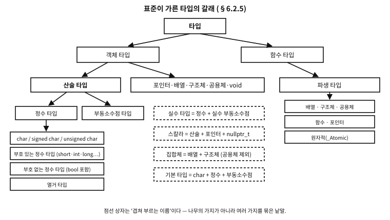

27 타입의 갈래 — 표준이 가른 것들
먼저 알아야 할 것
돌아보기
24장에서 int x = 0;을 쓰면서 「타입」이라는 낱말을 계속 썼다. 그러면 타입은 정확히 무엇을 정하는 것인가? 셋만 꼽아 보라.
답. 넷을 꼽을 수 있다.
- 크기 — 이 값이 몇 바이트를 차지하는가(4장).
- 표현 — 그 바이트를 어떤 눈으로 읽는가(6–7장의 2의 보수, IEEE 754).
- 허용되는 연산 — 무엇을 할 수 있는가(
%는 정수만,++는 실수 타입과 포인터만). - 계약 — 컴파일러가 무엇을 검사하고 무엇을 보장하는가.
이 장은 그 「타입」이라는 낱말 아래에 어떤 갈래가 있는지를 표준의 분류 그대로 세운다.
이 장의 필요성과 맥락
이 장이 끝나면
<stdint.h> 의 폭을 이름에 적는 타입들을 얹는다. 다음 장의 정수, 30장의 진급이 전부 이 어휘 위에 선다.이 장에서 답할 질문
void는 「아무것도 없음」인데 왜 타입인가?- 그렇다면
int도signed int와 별개의 타입인가? 같은 논리라면 그래야 할 것 같은데. - 그러면 선언에 올 수 있는 낱말은 한정자와 저장 클래스, 이 둘뿐인가?
- 「선택 사항」이라니 —
uint8_t가 없는 기계가 정말 있는가?
27.1 타입이 정하는 네 가지#
같은 여덟 바이트를 놓고도 double로 읽으면 3.14, long으로 읽으면 4614253070214989087이다(7장에서 본 그대로다). 바이트는 자기가 무엇인지 모르고, 아는 것은 타입뿐이다.
| 타입이 정하는 것 | 예 | 자세히 |
|---|---|---|
| 크기 | sizeof(int) = 4 | 4장 |
| 표현 | -1 은 int 로 FF FF FF FF | 6–7장 |
| 허용되는 연산 | % 는 정수만, / 는 산술 타입만 | 29·52장 |
| 계약 | const 는 「바꾸지 않는다」 | 24·55장 |
표 27.1 — 타입이 정하는 것
그래서 「타입을 안다」는 것은 문법을 아는 것이 아니라 이 네 가지를 아는 것이다. 그리고 표준은 그 네 가지를 갈래별로 정해 두었다.
27.2 첫 갈래 — 객체 타입과 함수 타입#
가장 위의 가름은 둘이다.
| 갈래 | 무엇인가 | 예 |
|---|---|---|
| 객체 타입(object type) | 값을 담는 자리를 서술한다 | int, double, struct point, int[10], char * |
| 함수 타입(function type) | 일하는 것을 서술한다 — 반환 타입과 매개변수로 | int(void), void(int, char *) |
표 27.2 — 객체 타입과 함수 타입
여기서 객체(object)는 「값을 담는 기억의 한 구역」을 말한다. 변수 하나, 배열 하나가 모두 객체다. 정식 정의와 그림은 36장에서 차근차근 본다.
객체 타입과 함수 타입의 가름이 실무에서 드러나는 자리가 있다. 함수 타입에는 sizeof를 쓸 수 없고, 객체가 아니므로 크기도 정렬도 없다. 함수를 값처럼 다루려면 함수를 가리키는 포인터로 바꿔야 하는 이유가 이것이다(68장).
27.2.1 완전 타입과 불완전 타입#
객체 타입은 다시 갈린다 — 크기를 아는가.
| 상태 | 무엇을 못 하는가 | 예 |
|---|---|---|
| 완전 타입(complete type) | (제약 없음) | int, struct point(정의를 본 뒤) |
| 불완전 타입(incomplete type) | sizeof 를 못 쓰고, 그 타입의 객체를 만들 수 없다 | 크기를 안 적은 배열 int a[], 태그만 선언한 struct node |
void | 완성될 수 없는 불완전 객체 타입 | 값의 집합이 비어 있다 |
표 27.3 — 불완전 타입이 못 하는 일
불완전 타입은 결함이 아니라 도구다. 「이런 타입이 있다는 것만 알고 속은 모른다」를 표현할 수 있어서, 헤더에 속을 감춘 채 포인터만 주고받는 불투명 타입(FILE *가 그 원형이다)이 성립한다. 속을 감추면 쓰는 쪽이 그 속에 의존할 수 없다는 것이 설계의 이득이다(48장).
문. void는 「아무것도 없음」인데 왜 타입인가?
답. 세 자리에서 서로 다른 일을 하기 때문이다.
void f(void)— 「반환할 값이 없다」와 「매개변수가 없다」.(void)printf(…)— 「이 값을 버리겠다」를 명시적으로 적는 캐스트.void *— 「어떤 객체를 가리키는지는 아직 정하지 않았다」. 이것만은 완전한 객체 타입이다(포인터니까 크기가 있다).
표준의 정의는 「값의 집합이 비어 있고, 완성될 수 없는 불완전 객체 타입」이다. 그래서 void 변수는 만들 수 없고 sizeof(void)도 표준에서는 쓸 수 없다 — GCC 는 확장으로 1을 준다(13장의 회색지대).
27.3 기본 타입#
표준이 「기본 타입」(basic types)이라 부르는 것은 정확히 이 셋을 합친 것이다.
| 무엇이 기본 타입인가 (§6.2.5p18) | 비고 |
|---|---|
char | 단 하나. 아래의 문자 타입 셋 중 하나 |
| 부호 있는 정수 타입과 부호 없는 정수 타입 | short·int·long·long long과 그 unsigned 짝 |
| 부동소수점 타입 | float·double·long double과 복소수 |
표 27.4 — 표준이 말하는 기본 타입
열거 타입은 기본 타입이 아니다. 정수 타입이기는 하지만 기본 타입 목록에는 들어가지 않는다 — 흔히 헷갈리는 자리다.
기본 타입에 대해 표준이 못박는 문장이 하나 더 있다. 「구현이 두 기본 타입에 같은 표현을 주더라도, 그것들은 여전히 별개의 타입이다.」 다음 절의 문자 타입이 그 문장의 대표 사례다.
27.3.1 문자 타입은 셋이다#
| 타입 | 부호 | 쓰는 자리 |
|---|---|---|
char | 구현이 정한다 — signed char 또는 unsigned char 와 같은 범위·표현·동작 | 문자를 담을 때 |
signed char | 부호 있음 | 작은 부호 있는 정수 |
unsigned char | 부호 없음 | 바이트를 들여다볼 때(49장) |
표 27.5 — 문자 타입 삼형제
핵심은 표준의 각주가 못박는 이 문장이다 — char 는 어느 선택을 했든 다른 둘과 별개의 타입이고, 둘 중 어느 것과도 호환되지 않는다. 즉 셋이지 둘이 아니다.
문. 그렇다면 int 도 signed int 와 별개의 타입인가? 같은 논리라면 그래야 할 것 같은데.
답. 아니다. 그리고 이 비대칭이 char 를 특별하게 만드는 바로 그 지점이다. int 와 signed int 는 같은 타입이다 — 철자만 둘일 뿐 하나다. 반면 char는 signed char·unsigned char 와 세 개의 다른 타입이다.
★ 표준이 이것을 표로 보여 준다. §6.7.3.1 은 쓸 수 있는 타입 지정자 조합을 나열하는데, 한 항목에 함께 적힌 철자들은 같은 타입이라는 뜻이다.
| 표준의 항목 | 그래서 |
|---|---|
char | ★ 저 혼자 한 항목 |
signed char | ★ 저 혼자 한 항목 |
unsigned char | ★ 저 혼자 한 항목 |
int, signed, signed int | 셋이 한 항목 — 같은 타입의 세 철자 |
unsigned, unsigned int | 둘이 한 항목 |
표 27.6 — §6.7.3.1 의 타입 지정자 항목 — 한 항목에 적힌 철자는 같은 타입
문자 타입만 세 항목으로 흩어져 있다. 다른 정수 타입은 모두 「부호 있는 쪽」과 「부호 없는 쪽」 둘뿐이고, signed 를 적든 말든 같은 타입이다.
이 책이 컴파일러에게 직접 물어보았다. _Generic 은 타입이 같은 두 갈래를 적으면 컴파일 오류를 낸다 — 그래서 판정기로 쓸 수 있다.
_Generic((i), int: "a", signed int: "b") /* error: two compatible types */GCC 가 “_Generic specifies two compatible types” 라고 거절한다. 곧 컴파일러가 「둘은 같은 타입이다」라고 선언한 것이다. 반대로 char·signed char· unsigned char 는 세 갈래로 나란히 적어도 아무 말이 없고, 각각 제 갈래로 간다.
char 가 signed char 와 별개의 타입이라는 사실이 눈에 보이는 자리는 포인터다. 실측하면 이렇게 갈린다.
char c; take_signed_char(&c); /* warning: … differ in signedness */
int i; take_signed_int(&i); /* 아무 말 없다 --- 같은 타입이므로 */즉 char * 는 signed char * 와 호환되지 않는다. 부호 있는 char 를 쓰는 기계에서 값의 범위가 똑같아도 그렇다 — 앞 절에서 본 「표현이 같아도 별개 타입」(§6.2.5)이 그대로 적용된다.
흔한 오해. “그러면 int x : 3; 도 signed int x : 3; 과 같겠네”
★ 여기가 유일한 예외다. 비트필드에서는 맨 int 가 signed int 와 갈라진다 — 표준이 「타입 지정자가 int 이면 그 비트필드가 부호 있는지 없는지는 구현이 정한다」고 적어 두었기 때문이다(§6.7.3.2 각주).
그래서 비트필드에는 signed int·unsigned int 를 반드시 적는다. 맨 int 로 두면 어떤 컴파일러에서는 x = -1 이 -1 로, 다른 컴파일러에서는 7 로 읽힌다. 이 책이 쓴 기계에서는 부호 있는 쪽이었지만, 그것은 이 기계의 사정일 뿐이다.
정리하면 규칙은 이렇다. signed 는 다른 정수 타입에서는 적어도 그만 안 적어도 그만인 장식이지만, char 에서는 타입을 바꾸는 낱말이고, 비트필드에서는 안 적으면 뜻이 구현에 맡겨진다.
흔한 오해. “char 는 그냥 signed char 다”
플랫폼에 달렸다. x86 리눅스에서는 부호 있고, ARM 리눅스와 여러 임베디드 툴체인에서는 부호가 없다. <limits.h> 의 CHAR_MIN 이 0인지 SCHAR_MIN 인지로 구별할 수 있다.
이 차이가 조용히 무는 자리가 있다. 128 이상의 바이트를 char 에 담아 비교하면 부호 있는 쪽에서는 음수가 된다.
char c = 0xFF;
if (c == 0xFF) { … } /* 부호 있는 char 에서는 성립하지 않는다 */그래서 규율은 단순하다 — 글자는 char, 바이트는 unsigned char, 작은 수는 int8_t. 세 용도를 이름으로 갈라 두면 이 함정을 만나지 않는다.
플랫폼 노트. C23: bool 은 부호 없는 정수 타입이다
C23 의 §6.2.5p8 은 「bool 과 표준 부호 있는 정수 타입에 대응하는 부호 없는 타입들을 합쳐 표준 부호 없는 정수 타입이라 부른다」고 적는다. 즉 bool 은 정수 타입이고, 산술 타입이며, 스칼라다.
실측(뒤의 type_map.c)이 그것을 확인한다 — bool + 0 의 타입은 int 다(진급되었다는 뜻이다). 값은 언제나 0 아니면 1 이라는 점만 특별하다: 어떤 스칼라를 bool 에 넣어도 0이면 0, 아니면 1이 된다. C99 의 _Bool 이 C23 에서 bool 이라는 예약어를 얻은 것이고, <stdbool.h> 는 이제 있어도 그만인 헤더가 되었다(97장).
27.4 정수·실수·산술 — 겹쳐 부르는 이름들#
여기부터가 이 책이 계속 써 온 어휘의 출처다. 이 이름들은 타입 분류 나무(아래 그림)의 가지가 아니라 여러 가지를 묶어 부르는 낱말이다.
| 이름 | 무엇을 묶은 것인가 (§6.2.5) | 이 이름을 쓰는 자리 |
|---|---|---|
| 정수 타입(integer type) | char + 부호 있는 정수 + 부호 없는 정수 + 열거 타입 | %·<< 의 피연산자 |
| 실수 타입(real type) | 정수 타입 + 실수 부동소수점 타입 (복소수 제외) | ++·-- 의 피연산자(52장) |
| 산술 타입(arithmetic type) | 정수 타입 + 부동소수점 타입 (복소수 포함) | +·-·*·/ 의 피연산자, 진급의 대상 |
| 스칼라 타입(scalar type) | 산술 타입 + 포인터 + nullptr_t(C23) | if·while 의 조건, ! 의 피연산자 |
| 집합체 타입(aggregate type) | 배열 + 구조체 — ★공용체는 아니다 | 초기화자 목록의 규칙 |
표 27.7 — 표준이 묶어 부르는 타입의 이름
52장의 연산자 계약 표에서 「피연산자: 실수 타입 또는 포인터」 같은 칸을 보게 되는데, 이제 그 칸을 정확히 읽을 수 있다.
흔한 오해. “공용체도 집합체다”
C 에서는 아니다. §6.2.5p26 은 「배열과 구조체 타입을 합쳐 집합체 타입이라 한다」고만 적는다. 공용체는 빠져 있다.
이유는 「집합체」라는 낱말이 동시에 여럿을 담는 것을 뜻하기 때문이다. 공용체는 한 번에 하나만 살아 있으므로(49장의 활성 멤버) 그 정의에 맞지 않는다.
C++ 는 다르다 — 거기서는 공용체도 조건을 갖추면 집합체(aggregate)다. 두 언어의 초기화 규칙을 비교할 때 이 차이가 드러난다.

그림 27.1 — 표준이 가른 타입의 갈래. 점선 상자는 여러 가지를 묶어 부르는 이름이다.
이 갈래가 말뿐이 아니라는 것은 컴파일러에게 직접 물어 확인할 수 있다. _Generic 으로 수식의 타입 이름을 찍어 본다.
examples/type-map/type_map.c
/* 표준의 타입 분류를 컴파일러에게 직접 물어본다.
_Generic 은 '이 수식의 타입이 무엇이냐'를 컴파일 시간에 고르는 장치다. */
#include <stdbool.h>
#include <stddef.h>
#include <stdint.h>
#include <stdio.h>
/* 어떤 타입인지 이름을 돌려준다 — 목록에 없으면 "그 밖" */
#define TYPE_NAME(x) _Generic((x), \
_Bool: "bool", \
char: "char", \
signed char: "signed char", \
unsigned char: "unsigned char", \
short: "short", \
unsigned short: "unsigned short", \
int: "int", \
unsigned int: "unsigned int", \
long: "long", \
unsigned long: "unsigned long", \
long long: "long long", \
unsigned long long: "unsigned long long", \
float: "float", \
double: "double", \
long double: "long double", \
void *: "void *", \
default: "other")
enum color { RED, GREEN, BLUE };
struct point { int x, y; };
union bits { int i; float f; };
int main(void)
{
puts("[same spelling, but this is the type the compiler sees]");
bool b = true;
char c = 'a';
signed char sc = 1;
unsigned char uc = 1;
uint8_t u8 = 1;
enum color e = RED;
printf(" bool → %s\n", TYPE_NAME(b));
printf(" char → %s\n", TYPE_NAME(c));
printf(" signed char -> %s <- a different type from char\n", TYPE_NAME(sc));
printf(" unsigned char → %s\n", TYPE_NAME(uc));
printf(" uint8_t -> %s <- an alias, not a new type\n", TYPE_NAME(u8));
printf(" size_t → %s\n", TYPE_NAME((size_t)1));
printf(" enum variable -> %s\n", TYPE_NAME(e));
printf(" enum constant -> %s <- RED itself is int\n", TYPE_NAME(RED));
puts("\n[what promotion turns them into - one arithmetic step reveals it]");
printf(" char + 0 → %s\n", TYPE_NAME(c + 0));
printf(" uint8_t + 0 -> %s <- not 8-bit arithmetic\n", TYPE_NAME(u8 + 0));
printf(" unsigned char*2 → %s\n", TYPE_NAME(uc * 2));
printf(" bool + 0 → %s\n", TYPE_NAME(b + 0));
puts("\n[checking the families by size]");
printf(" basic types are distinct even when their representations match:\n");
printf(" sizeof(char)=%zu sizeof(signed char)=%zu sizeof(unsigned char)=%zu\n",
sizeof(char), sizeof(signed char), sizeof(unsigned char));
printf(" aggregates (arrays, structs) and unions:\n");
printf(" sizeof(struct point)=%zu sizeof(union bits)=%zu sizeof(int[3])=%zu\n",
sizeof(struct point), sizeof(union bits), sizeof(int[3]));
printf(" scalars: arithmetic types + pointers + nullptr_t\n");
printf(" sizeof(void *)=%zu sizeof(nullptr_t)=%zu\n",
sizeof(void *), sizeof(nullptr_t));
puts("\n[void is an incomplete object type that can never be completed]");
puts(" sizeof(void) is not allowed in standard C (GCC gives 1 as an extension).");
return 0;
}
실행 결과
[same spelling, but this is the type the compiler sees]
bool → bool
char → char
signed char -> signed char <- a different type from char
unsigned char → unsigned char
uint8_t -> unsigned char <- an alias, not a new type
size_t → unsigned long
enum variable -> unsigned int
enum constant -> int <- RED itself is int
[what promotion turns them into - one arithmetic step reveals it]
char + 0 → int
uint8_t + 0 -> int <- not 8-bit arithmetic
unsigned char*2 → int
bool + 0 → int
[checking the families by size]
basic types are distinct even when their representations match:
sizeof(char)=1 sizeof(signed char)=1 sizeof(unsigned char)=1
aggregates (arrays, structs) and unions:
sizeof(struct point)=8 sizeof(union bits)=4 sizeof(int[3])=12
scalars: arithmetic types + pointers + nullptr_t
sizeof(void *)=8 sizeof(nullptr_t)=8
[void is an incomplete object type that can never be completed]
sizeof(void) is not allowed in standard C (GCC gives 1 as an extension).
uint8_t 는 unsigned char 로 나온다 — 새 타입이 아니라 별명이다. 그리고 bool + 0 · uint8_t + 0 처럼 한 번 계산을 거치면 int 보다 좁은 타입은 (폭을 직접 적는 _BitInt 정수 — 28장 — 를 빼면) 모두 int 가 된다(정수 진급, 30장).
27.5 파생 타입 — 있는 것에서 만들어 내는 것#
객체 타입과 함수 타입에서 새 타입을 지어낼 수 있고, 그렇게 지은 것을 파생 타입(derived type)이라 한다.
| 파생 | 무엇에서 무엇을 | 자세히 |
|---|---|---|
| 배열 | 원소 타입 T 에서 「T 의 배열」로 | 39장 |
| 구조체 | 여러 타입을 차례로 담아 | 47장 |
| 공용체 | 여러 타입을 겹쳐 담아 | 49장 |
| 함수 | 반환 타입 T 에서 「T 를 돌려주는 함수」로 | 25장 |
| 포인터 | 참조 타입 T 에서 「T 를 가리키는 포인터」로 | 36장 |
| 원자적 | _Atomic(T) — 조건부 기능 | 95장 |
표 27.8 — 파생 타입 — 무엇에서 무엇이 나오는가
이 만들기는 재귀적으로 적용된다. 「int 를 가리키는 포인터의 배열 10개」도, 「int 를 돌려주는 함수를 가리키는 포인터」도 그렇게 지어진다. 69장 「선언을 읽는 법」이 어려운 이유가 바로 이 재귀에 있고, 표준은 그중 셋 — 배열·함수·포인터 — 을 따로 묶어 파생 선언자 타입(derived declarator type)이라 부른다. 선언을 읽을 때 안쪽에서 바깥으로 풀어야 하는 것이 정확히 이 셋이다.
27.6 한정자 — 같은 타입의 한정판#
타입 한정자(type qualifier)는 새 타입을 만드는 것이 아니라 한정된 판을 만든다. C23 이 정한 한정자는 넷이고, 이것이 전부다.
| 한정자 | 무엇을 약속하는가 | 어기면 | 자세히 |
|---|---|---|---|
const | 이 이름으로는 바꾸지 않는다 | 컴파일 오류(제약 위반) | 24장 |
volatile | 내가 모르는 사이에 바뀔 수 있으니 접근을 지우거나 합치지 말라 | 값이 조용히 틀려진다 | 14·91·92장 |
restrict | 이 포인터로만 이 객체에 닿는다 | ★ 미정의 동작 — 진단 없음 | 39·41장 |
_Atomic | 이 객체에 대한 접근은 쪼개지지 않는다 | 자료 경합 = 미정의 동작 | 95장 |
표 27.9 — 타입 한정자가 하는 약속
흔한 오해. “register 도 한정자 아닌가”
아니다. 그리고 이 혼동은 아주 흔하다. register 는 저장 클래스 지정자이고, static·extern·typedef 와 같은 가족이다(45장). 둘은 하는 일도 문법 자리도 다르다.
| 타입 한정자 | 저장 클래스 지정자 | |
|---|---|---|
| 무엇을 꾸미나 | 타입 | 객체(그 이름) |
| 몇 개까지 | 넷 다 겹쳐 쓸 수 있다 | ★ 원칙적으로 하나뿐 |
| 정하는 것 | 무엇을 할 수 있는가 | 수명·유효범위·연결 |
| 보기 | const volatile int | static int |
표 27.10 — 타입 한정자와 저장 클래스 지정자의 자리
한정자와 저장 클래스 지정자를 가르는 물음이 하나 있다. “typedef 로 뽑아낼 수 있는가.” const int 는 통째로 하나의 타입이라 typedef const int ci; 가 되지만, static 은 타입의 일부가 아니라서 typedef static int si; 는 문법 오류다. 실측하면 multiple storage classes in declaration specifiers 라고 말한다.
27.6.1 한정판은 원본과 같은 크기다#
한정된 타입과 한정되지 않은 타입은 크기·표현·정렬이 같다 — 달라지는 것은 무엇을 할 수 있는가뿐이다.
examples/type-map/qualifiers.c
/* 타입 한정자 넷을 한자리에서 확인한다.
요점은 「한정판은 같은 타입의 다른 판일 뿐, 크기도 정렬도 바뀌지 않는다」이다. */
#include <stdio.h>
#include <stdalign.h>
struct big { char a[9]; };
int main(void)
{
puts("① a qualifier changes neither size nor alignment");
printf(" int : %zu / %zu\n", sizeof(int), alignof(int));
printf(" const int : %zu / %zu\n", sizeof(const int), alignof(const int));
printf(" volatile int : %zu / %zu\n", sizeof(volatile int), alignof(volatile int));
printf(" struct big : %zu / %zu\n", sizeof(struct big), alignof(struct big));
printf(" _Atomic big : %zu / %zu <- unchanged in this implementation\n",
sizeof(_Atomic struct big), alignof(_Atomic struct big));
puts("\n② order is free, and they can be combined");
const volatile int a = 1;
volatile const int b = 2; /* 위와 완전히 같은 타입 */
printf(" const volatile int a = %d, volatile const int b = %d\n", a, b);
puts("\n③ _Atomic has two faces");
_Atomic int c = 3; /* 한정자로 쓴 꼴 */
_Atomic(int) d = 4; /* 타입 지정자로 쓴 꼴 — 같은 타입이다 */
printf(" _Atomic int c = %d, _Atomic(int) d = %d\n", c, d);
/* typedef int A[3]; _Atomic A x; <- 배열에는 붙일 수 없다: 컴파일 오류 */
puts("\n④ const only says 「not through this name」");
int x = 10;
const int *p = &x; /* p 로는 못 바꾼다 */
x = 20; /* 그러나 x 로는 바꿀 수 있다 */
printf(" changing x directly gives *p = %d <- const is a promise about the path, not the value\n", *p);
/* *p = 30; <- 오류: assignment of read-only location */
puts("\n⑤ you may add a qualifier, but you may not silently drop one");
const int ci = 7;
const int *q = &ci; /* 붙이기: 된다 */
printf(" int * -> const int * passes; the reverse warns (-Wdiscarded-qualifiers), *q = %d\n", *q);
/* int *bad = &ci; <- 경고: initialization discards 'const' qualifier */
return 0;
}
실행 결과
① a qualifier changes neither size nor alignment
int : 4 / 4
const int : 4 / 4
volatile int : 4 / 4
struct big : 9 / 1
_Atomic big : 9 / 1 <- unchanged in this implementation
② order is free, and they can be combined
const volatile int a = 1, volatile const int b = 2
③ _Atomic has two faces
_Atomic int c = 3, _Atomic(int) d = 4
④ const only says 「not through this name」
changing x directly gives *p = 20 <- const is a promise about the path, not the value
⑤ you may add a qualifier, but you may not silently drop one
int * -> const int * passes; the reverse warns (-Wdiscarded-qualifiers), *q = 7
출력 ①이 그 확인이다. const int 도 volatile int 도 4바이트이고 정렬도 같다.
★ 다만 _Atomic 에는 단서를 달아야 한다. 표준은 원자적 타입이 대응하는 비원자적 타입과 같은 크기·정렬을 가질 것을 요구하지 않는다. 구현이 잠금을 숨겨 두어야 한다면 커질 수 있다. 예제의 9바이트 구조체는 이 구현에서 그대로였지만, 그렇지 않을 수도 있다는 것이 계약이다. 그래서 원자적 타입에는 atomic_is_lock_free 라는 물음이 따로 있다(95장).
27.6.2 한정자는 순서가 자유롭고, 겹쳐 쓸 수 있다#
출력 ②처럼 const volatile int 와 volatile const int 는 같은 타입이다. 한정자는 타입 지정자 앞뒤 어디에 놓아도 되고, 넷을 함께 쓸 수도 있다.
같은 한정자를 두 번 적는 것도 허용된다 — 한 번 적은 것과 같게 친다. C23 이 새로 연 길이 아니라 C11 에 이미 있던 규칙이고(C11 §6.7.3 p5 — 「직접 적었든 typedef를 거쳤든」), C23 은 거기에 typeof 를 거쳐 겹치는 경우를 더했다(§6.7.4.1 p6). typedef 를 거치면 실수로 그렇게 되기 쉽기 때문이다.
typedef const int ci;
const ci x = 1; /* const 가 두 번 --- 합법, 한 번으로 친다 */컴파일러는 친절하게도 알려 준다(GCC 는 -Wduplicate-decl-specifier). 일부러 적을 일은 없지만, 매크로와 typedef 가 겹치는 자리에서 이 규칙이 프로그램을 살린다.
27.6.3 _Atomic 만 얼굴이 둘이다#
넷 중 _Atomic 만 한정자로도, 타입 지정자로도 쓰인다.
_Atomic int c; /* 한정자로 쓴 꼴 */
_Atomic(int) d; /* 타입 지정자로 쓴 꼴 — 같은 타입이다 */출력 ③이 둘이 같음을 보인다. 괄호 꼴이 있는 이유는 복잡한 타입을 감쌀 때 필요해서다 — _Atomic(int *) 는 「원자적인 포인터」이고, int * _Atomic 도 같은 뜻이지만 읽기가 나쁘다.
★ 그리고 _Atomic 에만 있는 제약이 하나 있다. 배열과 함수에는 붙일 수 없다. 배열 전체를 한 번에 쪼개지지 않게 만들 방법이 없기 때문이다(실측: '_Atomic'-qualified array type). _Atomic int a[3]; 는 되는데, 이것은 배열이 원자적인 것이 아니라 원소 하나하나가 원자적이라는 뜻이다.
27.6.4 한정자는 값이 아니라 통로의 성질이다#
출력 ④가 이 절의 요점이다. const int *p = &x; 로 두어도 x 자체는 여전히 바꿀 수 있다. const 는 「이 값은 상수다」가 아니라 「이 이름으로는 바꾸지 않는다」는 약속이다.
27.6.5 한정자는 붙일 수는 있어도 몰래 뗄 수는 없다#
출력 ⑤가 방향을 보인다. int * 를 const int * 에 넘기는 것은 합법이지만, 반대는 경고다(-Wdiscarded-qualifiers). 한정을 늘리는 방향만 조용히 허용된다.
★ 그런데 이 규칙에는 유명한 함정이 있다. char ** 를 const char ** 에 넘기는 것은 안 된다. 포인터 호환성은 한 겹 아래로 이행하지 않기 때문이다 — 자세한 논증은 69장에서 표준 조항을 따라가며 본다.
27.6.6 const 가 어디에 붙는지가 뜻을 뒤집는다#
한정자를 읽을 때 가장 자주 사고가 나는 자리는 포인터다.
| 선언 | 무엇이 읽기 전용인가 |
|---|---|
const int *p | 가리키는 값 |
int const *p | 같다 — 순서만 다르다 |
int *const p | 포인터 자신 |
const int *const p | 둘 다 |
표 27.11 — const 가 붙는 자리에 따라 달라지는 것
네 선언에서 무엇이 읽기 전용인지 가르는 규칙은 한 줄이다 — 한정자는 바로 왼쪽 것을 꾸민다. 왼쪽에 아무것도 없으면 오른쪽 것을 꾸민다. 69장의 우선순위 규칙 C항이 바로 이것이고, 거기서 실행으로 갈라 본다.
문. 그러면 선언에 올 수 있는 낱말은 한정자와 저장 클래스, 이 둘뿐인가?
답. 아니다. 표준은 선언 지정자(declaration specifier) 자리에 올 수 있는 것을 다섯 갈래로 나눈다. 이 책은 각 갈래를 그 갈래가 실제로 문제되는 장에서 다룬다.
| 갈래 | 낱말들 | 모아 둔 곳 |
|---|---|---|
| 타입 지정자 | void·char·int·struct·enum·typeof … | 이 장 |
| 타입 한정자 | const·volatile·restrict·_Atomic | 이 절 |
| 저장 클래스 지정자 | auto·constexpr·extern·register·static·thread_local·typedef | 45장 |
| 함수 지정자 | inline·_Noreturn | 25장 |
| 정렬 지정자 | alignas | 48장 |
표 27.12 — 타입을 말하는 낱말과 그 모인 자리
★ 이 다섯이 전부다. 그래서 static const volatile unsigned long x; 처럼 여러 갈래에서 하나씩 가져와 쌓는 것은 되고, 같은 갈래에서 둘을 가져오는 것은(저장 클래스처럼 하나로 제한된 갈래에서) 안 된다.
27.7 폭을 이름에 적는 타입들 — <stdint.h>#
여기까지가 언어가 준 타입이고, 이제 표준 라이브러리가 이름을 붙여 준 타입이다. int 의 크기가 구현마다 다르다는 문제(다음 장)를 정면으로 푸는 도구다.
examples/type-map/stdint_kinds.c
/* <stdint.h> 의 세 갈래와 uint8_t 의 함정. */
#include <inttypes.h>
#include <limits.h>
#include <stdint.h>
#include <stdio.h>
int main(void)
{
puts("[three families - they demand different things]");
printf(" %-16s %-6s %s\n", "type", "size", "what it guarantees");
printf(" %-16s %-6zu %s\n", "uint8_t", sizeof(uint8_t),
"exactly 8 bits, no padding (optional)");
printf(" %-16s %-6zu %s\n", "uint_least8_t", sizeof(uint_least8_t),
"smallest type with at least 8 bits (required)");
printf(" %-16s %-6zu %s\n", "uint_fast8_t", sizeof(uint_fast8_t),
"usually the fastest with at least 8 bits (required)");
printf(" %-16s %-6zu %s\n", "uint_least32_t", sizeof(uint_least32_t), "at least 32 bits");
printf(" %-16s %-6zu %s\n", "uint_fast32_t", sizeof(uint_fast32_t), "at least 32 bits, speed first");
printf(" %-16s %-6zu %s\n", "uintmax_t", sizeof(uintmax_t), "the widest integer (required)");
printf(" %-16s %-6zu %s\n", "uintptr_t", sizeof(uintptr_t), "round-trips a void* (optional)");
puts("\n[trap 1: uint8_t is usually unsigned char, so it leaks out as a character]");
uint8_t age = 65;
printf(" as %%u: %u\n", age);
printf(" as %%c: %c <- you get 'A', not 65\n", age);
printf(" putchar(age) is the same trap\n");
puts("\n[trap 2: arithmetic promotes to int - this is not 8-bit arithmetic]");
uint8_t a = 200, b = 100;
printf(" a + b = %d <- computed as int, so 300 (it did not wrap)\n", a + b);
printf(" (uint8_t)(a+b) = %u <- it wraps only when stored back\n", (uint8_t)(a + b));
printf(" sizeof(a + b) = %zu <- the result is 4 bytes\n", sizeof(a + b));
puts("\n[trap 3: they are only aliases, so the format macros must follow]");
printf(" with PRIu8: %" PRIu8 "\n", age);
printf(" UINT8_C(200) is %u, UINT8_MAX is %u\n", UINT8_C(200), UINT8_MAX);
puts("\n[which one, when]");
puts(" protocol, file format, register -> exact width (uint32_t)");
puts(" portability first, width at least -> minimum width (uint_least16_t)");
puts(" loop counter, local arithmetic -> fastest width (uint_fast32_t)");
puts(" size, index, byte count -> size_t (<stddef.h>)");
return 0;
}
실행 결과
[three families - they demand different things]
type size what it guarantees
uint8_t 1 exactly 8 bits, no padding (optional)
uint_least8_t 1 smallest type with at least 8 bits (required)
uint_fast8_t 1 usually the fastest with at least 8 bits (required)
uint_least32_t 4 at least 32 bits
uint_fast32_t 8 at least 32 bits, speed first
uintmax_t 8 the widest integer (required)
uintptr_t 8 round-trips a void* (optional)
[trap 1: uint8_t is usually unsigned char, so it leaks out as a character]
as %u: 65
as %c: A <- you get 'A', not 65
putchar(age) is the same trap
[trap 2: arithmetic promotes to int - this is not 8-bit arithmetic]
a + b = 300 <- computed as int, so 300 (it did not wrap)
(uint8_t)(a+b) = 44 <- it wraps only when stored back
sizeof(a + b) = 4 <- the result is 4 bytes
[trap 3: they are only aliases, so the format macros must follow]
with PRIu8: 65
UINT8_C(200) is 200, UINT8_MAX is 255
[which one, when]
protocol, file format, register -> exact width (uint32_t)
portability first, width at least -> minimum width (uint_least16_t)
loop counter, local arithmetic -> fastest width (uint_fast32_t)
size, index, byte count -> size_t (<stddef.h>)
27.7.1 <stdint.h> 타입의 세 갈래를 가르는 기준은 「폭에 무엇을 요구하는가」다#
| 갈래 | 이름 | 무엇을 보장하는가 | 있는가 |
|---|---|---|---|
| 정확 폭 | int8_t uint32_t … | 정확히 N 비트, 패딩 비트 없음, 2의 보수 | 선택 사항 — 그런 타입이 있는 구현만 정의한다 |
| 최소 폭 | int_least8_t uint_least32_t … | N 비트 이상 중 가장 작은 것 | 8·16·32·64 는 필수 |
| 가장 빠른 폭 | int_fast8_t uint_fast32_t … | N 비트 이상 중 대개 가장 빠른 것 | 8·16·32·64 는 필수 |
| 포인터 담기 | intptr_t uintptr_t | void * 를 담았다 되돌리면 같은 포인터 | 선택 사항(36장) |
| 가장 넓은 | intmax_t uintmax_t | 어떤 정수 타입의 값도 담는다 | 필수 |
표 27.13 — <stdint.h> 의 폭 타입 — 세 갈래와 포인터 담기 · 가장 넓은 타입
실측에서 최소 폭과 가장 빠른 폭의 차이가 드러난다 — 이 기계에서 uint_fast32_t 는 8바이트였다. 32비트면 충분한데 64비트를 쓴 것이고, 그것이 「빠른」의 뜻이다(레지스터 폭에 맞는 쪽이 빠르다). 크기를 아끼려는 타입이 아니다.
문. 「선택 사항」이라니 — uint8_t 가 없는 기계가 정말 있는가?
답. 드물지만 있다. 그리고 「선택 사항」이라는 말은 사실 절반만 맞다 — 표준의 조건이 더 정확하다.
“ 구현이 어떤 폭과 패딩 비트 없음을 갖춘 표준 정수 타입이나 확장 정수 타입을 갖추고 있다면, 그에 대응하는 typedef 이름을 정의해야 한다.(§7.22.1.1) ”
즉 구현이 마음대로 빼는 것이 아니라, 그런 타입이 기계에 없으면 정의할 수가 없는 것이다. uint8_t 가 그 예다 — 일부 DSP(digital signal processor) 는 char 가 16비트라 「정확히 8비트」인 타입 자체가 없고, 그래서 uint8_t 를 정의하지 않는다. CHAR_BIT 가 8이 아닌 기계에서는 8의 배수가 아닌 폭이 줄줄이 빠진다.
★ 폭이 넓을수록 사정이 낫다. uint32_t 가 없는 기계는 훨씬 드물다 — 워드가 36비트인 옛 대형기처럼 어떤 정수 타입도 정확히 32비트가 아닌 기계라야 한다. 그러니 「없을까 봐」 걱정한다면 그 걱정은 대개 uint8_t·uint16_t 쪽이다.
실무의 판단은 이렇다. 데스크톱·서버·주류 임베디드만 상대한다면 정확 폭 타입을 마음 놓고 쓴다(13장의 사다리에서 1~2단). 모든 C 구현을 상대하는 라이브러리를 쓴다면 최소 폭 타입을 쓰고, 정확 폭이 꼭 필요한 자리는 static_assert(sizeof(uint8_t) == 1) 처럼 빌드가 말하게 해 둔다(사다리 3단).
27.7.2 uint8_t 의 함정 셋#
가장 많이 쓰이면서 가장 많이 다치는 타입이라 따로 짚는다.
반례. ① 숫자를 넣었는데 글자가 나온다
uint8_t age = 65;
printf("%c\n", age); /* 'A' 가 나온다 */
putchar(age); /* 같은 함정 */uint8_t 는 대개 unsigned char 의 별명이라, 문자를 받는 자리에 그대로 들어간다. 컴파일러는 타입이 맞으므로 아무 말도 하지 않는다.
uint8_t 는 「작은 수」가 아니라 「바이트」로 쓰는 것이 안전하다. 사람에게 보여 줄 작은 수라면 int 나 int16_t 를 쓰고, 굳이 인쇄해야 한다면 %u(int 로 진급되어 오지만 음수가 아니라 unsigned 로 꺼내도 값이 같다 — C23 §7.23.6.1)나 PRIu8 을 쓴다.
반례. ② 8비트 산술이라고 생각하기
uint8_t a = 200, b = 100;
a + b /* 44 가 아니라 300 이다 */실측이 그것을 보인다. uint8_t 는 int 보다 좁으므로 산술 전에 int 로 진급된다(30장). 즉 계산은 32비트에서 일어나고, 감아 돌게 하려면 다시 담아야 한다 — (uint8_t)(a + b) 가 44 다.
이것은 결함이 아니라 오히려 안전장치다. 좁은 타입끼리 곱해도 중간 결과가 잘리지 않는다. 다만 「8비트 변수를 썼으니 8비트로 계산되겠지」라는 기대만은 버려야 한다.
반례. ③ 새 타입이라고 생각하기
typedef 는 별명을 지을 뿐 새 타입을 만들지 않는다(69장). 그래서 uint8_t 와 unsigned char 는 같은 타입이고, _Generic 도 오버로딩도 둘을 구별하지 못한다. 앞 절 type_map.c 실측의 uint8_t -> unsigned char 줄이 그 증거다.
같은 이유로 이런 코드는 컴파일러가 잡아 주지 않는다.
void send(uint8_t port, uint8_t value);
send(value, port); /* 순서를 바꿔 넣어도 조용하다 */타입으로 구별하고 싶다면 구조체로 감싸는 것이 C 에서 쓰는 방법이다 — struct port { uint8_t v; }; 처럼. 대가는 문법이 번거로워지는 것이고, 얻는 것은 컴파일러의 검사다.
27.7.3 그래서 어느 정수 타입을 쓰는가#
| 이런 자리 | 이것을 쓴다 | 왜 |
|---|---|---|
| 프로토콜·파일 형식·하드웨어 레지스터 | 정확 폭 uint32_t | 바이트 수가 계약이다(49장) |
| 모든 구현을 상대하는 이식성 코드 | 최소 폭 uint_least16_t | 정확 폭은 선택 사항이다 |
| 반복 카운터·지역 계산 | 가장 빠른 폭 uint_fast32_t, 또는 그냥 int | 폭보다 속도가 중요한 자리 |
| 크기·인덱스·바이트 수 | size_t(<stddef.h>) | sizeof 의 타입이고 배열을 다 덮는다 |
| 두 포인터의 차 | ptrdiff_t(<stddef.h>) | 부호가 필요하다(39장) |
| 사람에게 보일 작은 수 | int | 진급되면 어차피 int 다 |
표 27.14 — 자리에 맞는 정수 타입 고르기
마지막 줄이 실무의 기본값이라는 것을 강조해 둔다. 특별한 이유가 없으면 int 다. 폭을 이름에 적는 타입은 폭이 계약인 자리에 쓰는 도구이지, 크기를 아끼려고 쓰는 것이 아니다.
실제 사례. size_t 는 어디에 사는가
자주 헷갈리는 자리라 적어 둔다. size_t 와 ptrdiff_t 는 <stdint.h> 가 아니라 <stddef.h> 소속이다. <stdint.h> 는 폭을 이름에 적은 타입들의 집이고, <stddef.h> 는 언어가 쓰는 타입들(size_t·ptrdiff_t·nullptr_t·max_align_t)의 집이다.
실무에서는 <stdio.h> 같은 다른 헤더가 size_t 를 함께 끌어와 주는 일이 많아 이 구별이 흐려지는데, 그 헤더가 언젠가 바뀌면 깨진다. 쓰는 타입이 정의된 헤더를 직접 포함하는 것이 규율이다(63장의 이름 이야기와 같은 결이다).
27.8 요약 — 표준의 낱말과 이 책의 장#
| 표준의 낱말 | 무엇인가 | 정면으로 다루는 장 |
|---|---|---|
| object type / function type | 값을 담는 것 / 일하는 것 | 이 장, 25·68장 |
| complete / incomplete type | 크기를 아는가 | 이 장, 48장 |
| basic types | char + 정수 + 부동소수점 | 이 장, 28·52장 |
| character types | char·signed char·unsigned char 셋 | 이 장, 8·43장 |
| integer types | char + 정수 + 열거 | 28장 |
| real types | 정수 + 실수 부동소수점 | 52장 |
| arithmetic types | 정수 + 부동소수점 | 30장(진급) |
| derived types | 배열·구조체·공용체·함수·포인터·원자적 | 36·39·47·49장 |
| scalar types | 산술 + 포인터 + nullptr_t | 31·37장 |
| aggregate types | 배열 + 구조체 | 39·47장 |
| qualified types | const·volatile·restrict·_Atomic — 넷 | 이 장, 24·39·95장 |
| storage-class specifiers | static·extern·register … 일곱 | 45장 |
| function specifiers | inline·_Noreturn | 25장 |
표 27.15 — 표준의 낱말과 정면으로 다루는 장
갈래를 폈다. 다음 장부터 이 갈래의 한 칸씩을 파고든다 — 먼저 정수다. 이 장에서 「부호 있는 정수 타입과 부호 없는 정수 타입」이라 한 마디로 지나간 그 가족의 속을, 범위와 표현과 사고까지 함께 본다.